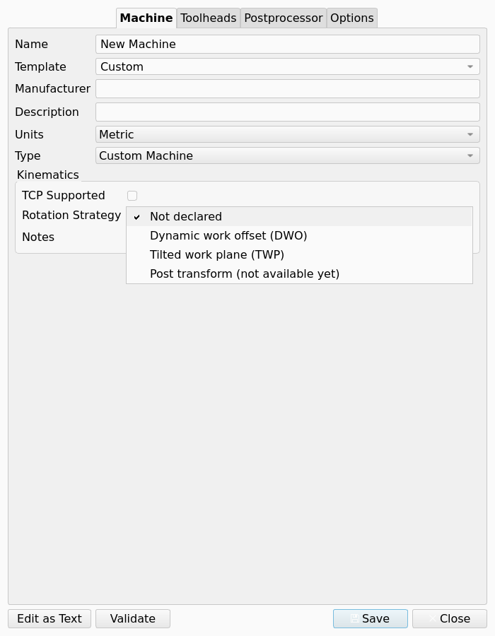
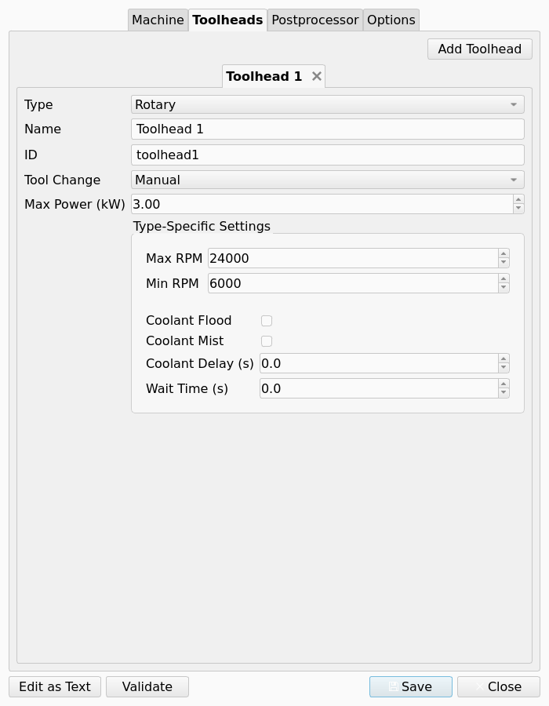
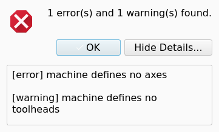
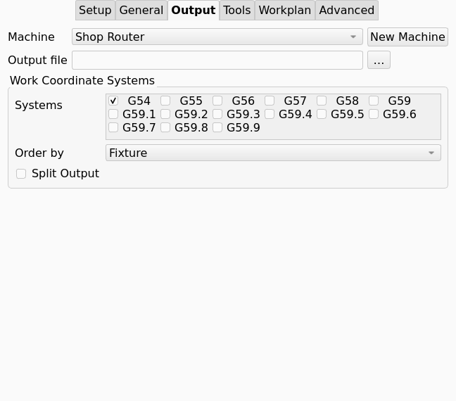
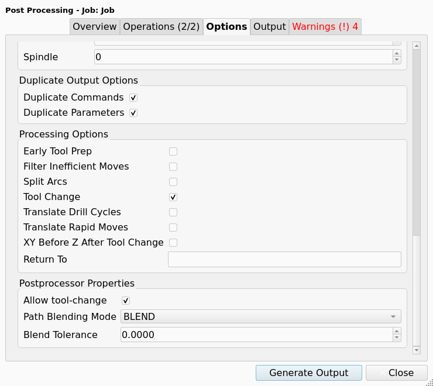

Machine Configuration
Overview
introduced in 26.3: A Machine describes a physical CNC machine to the CAM workbench. The description holds the axes and their limits, the kinematics, the Toolheads, the Post-Processor (Post) and the format of the G-code output. One JSON file with the .fcm extension stores the description. A Job that has a Machine uses machine-based post-processing.
This page explains the Machine Editor, the .fcm file format, the validation of a Machine, and the Machine settings in the Job. Machine is the command page and lists the common Post-Processor Properties. Writing a Machine-Based Post-Processor explains how to write a Post for this system.
How the pieces fit
A Job stores only the display name of its Machine, in the Machine property. At export, the workbench finds the .fcm file whose machine.name field matches that name. The comparison ignores case. The postprocessor.file_name key of the file selects the Post. The output options, the processing options and the Post-Processor Properties of the Machine then configure that Post.
A Job with no Machine uses its PostProcessor and PostProcessorArgs properties. The two systems exist together.
A Machine starts in the Machine Editor as a new Machine, as a copy of a Machine Template, or as an import from an MTConnect agent. The Machine Editor accepts an imported Machine that is not yet saved to a file.
Each Post-Processor Property has one Property Scope. The scope sets where the property is edited.
| Scope | Where the property is edited | Where the value is stored |
|---|---|---|
Machine |
The Machine Editor only. The Post-Processing Dialog does not show the property. |
The |
Job |
The Machine Editor sets the default. The Options tab of the Post-Processing Dialog overrides the default for one run. |
The |
Run |
The Overview tab of the Post-Processing Dialog only. |
Not stored |
Internal |
No interface shows the property. |
Not stored; the Post derives the value |
A property that declares no scope has Job scope.
The Post gets each value from these sources. A source later in the list has priority over the sources before it.
-
The default in the property schema of the Post.
-
The value in the
.fcmfile (postprocessor.properties). -
The override in the Job’s
PostProcessorPropertyOverridesproperty. -
The value entered in the Post-Processing Dialog for one export.
Where machine files live
Saved Machines
Saved Machines are .fcm files in the Machines folder of the CAM asset directory. The default location is <user application data>/CamAssets/Machines/. The Job task panel and the Post-Processing Dialog offer these Machines.
The file name is the Machine name with each space replaced by an underscore: My Router becomes My_Router.fcm. The display name always comes from the machine.name field in the file.
Add-on Machine Templates
An installed add-on whose package.xml declares a machine content item supplies the .fcm files of the declared folder as read-only Machine Templates. The Template list groups them by the add-on name. Folders nest to any depth in the list. The FreeCAD/Machines add-on in the Addon Manager is the community collection.
The selection of a Machine Template copies its settings into your own Machine. An update of the add-on does not change your Machine.
A file named ADDON_DISABLED in the add-on folder hides that add-on. A file named ALL_ADDONS_DISABLED in the Mod folder hides all add-ons.
Built-in Machine Templates
The Type values of the Machine Editor make standard 2-axis to 5-axis configurations without a file. The Machine Editor also reads .fcm Machine Templates from the Machine/machines folder of the CAM module.
The Machine Editor
Open the Machine Editor from one of these locations:
The Machine Editor has four tabs: Machine, Toolheads, Postprocessor and Options. The Postprocessor and Options tabs are hidden when the boolean parameter Mod/CAM/EnableMachinePostprocessor is false. The default of the parameter is true.
Below the tabs are the buttons Edit as Text, Validate, Save and Close. Save writes the .fcm file. Close discards the changes.
Machine tab
Name, Manufacturer and Description identify the Machine. The Job uses the name to find the Machine. Units sets Metric or Imperial for the values on this tab. Units is independent of the G-code output units on the Options tab.
Template loads the settings of a machine type, of a saved Machine, or of a built-in or add-on Machine Template.
Type builds the axis set again from one of these values:
| Type | Axes |
|---|---|
|
None. Define each axis manually. |
|
X, Z linear |
|
X, Y, Z linear |
|
X, Y, Z linear; A rotary about X |
|
X, Y, Z linear; B rotary about Y |
|
X, Y, Z linear; C rotary that carries an A tilt (table and table) |
|
X, Y, Z linear; B tilt that carries a C rotary (head and head) |
The Kinematics group has three controls:
-
TCP Supported: the control does tool-center-point control, for example G43.4. Default: unchecked.
-
Rotation Strategy: how the control runs an Operation on a tilted Work Plane. Values
Not declared,Dynamic work offset (DWO),Tilted work plane (TWP),Post transform (not available yet). Default:Not declared. -
Kinematics Notes: free text.
The figure shows the Rotation Strategy list with its four values.

With DWO, the Post commands the rotary axes and the control applies its pivot offsets. With TWP, the Post declares the plane and the control positions the rotary axes. The command that declares the plane comes from the Post, not from the Machine. A Machine with rotary axes and no strategy cannot post an Operation on a tilted Work Plane. Machine lists the conditions that the export checks.
An MTConnect import writes one line with the source of the import into Description. The import writes the same line into Kinematics Notes, then the text "Import assumptions:" and one line for each assumption. Examine these assumptions before you save the Machine.
Each axis has these fields:
| Field | Meaning |
|---|---|
Role |
The position of the axis in the kinematic chain: |
Parent |
The axis that carries this axis. An A tilt on a C rotary has the parent C. |
Sequence |
The order of the axis in its chain. |
Joint Origin |
The point through which the axis acts, in machine coordinates. |
Direction, Rotation Axis |
The unit vector of travel for a linear axis, or of the rotation axis for a rotary axis. Values ±X, ±Y, ±Z. |
Min Limit, Max Limit |
The travel limits, in mm or inch for a linear axis and in degrees for a rotary axis. The Sanity Check compares each Toolpath with the limits. |
Max Velocity |
The maximum speed of the axis. |
A rotary axis has three more fields. These fields control the angles in the G-code.
-
Solution Preference: when two rotary solutions give the same orientation, the preferred motion. Values
shortest,positive,negative. Default:shortest. -
Allow Flip: permits the solution that is turned 180° when that solution keeps the motion in the limits. Default: checked.
-
Wrap Strategy: the angle output when an axis turns through full revolutions. Default:
unwound.-
unwound: the angle increases without a limit, for example 4613.86°. Use this value for a control that moves the rotary axis as a linear axis. -
modulo: the angle stays in the range 0° to 360°. Use this value for an indexer, or when the direction across the wrap is not important. -
rezero: the angle stays in the range 0° to 360°. The Post addsG92 A0at each full revolution andG92.1at the end. Use this value for a control that wraps on the shortest route, when a continuous direction is necessary.
-
Toolheads tab
The Toolheads tab is the second tab of the Machine Editor. A Machine can have more than one Toolhead.
The figure shows the tab with one rotary Toolhead.

-
Add Toolhead adds a Toolhead. Each Toolhead has its own tab. The close button of the tab removes the Toolhead.
-
Toolhead type:
Rotary,Laser,Waterjet,PlasmaorWire EDM. The type sets the capabilities of the Toolhead. -
Common fields: minimum and maximum rpm, maximum power in kW, tool change mode (
manualor automatic), coolant flood and mist, coolant delay, and the wait time after start. -
Fields for one type: laser wavelength and focus range, waterjet pressure, plasma amperage.
A Wire EDM Toolhead moves along Z and the table supplies X and Y. This Toolhead has power control and pulse control, uses water, and has no speed control.
The Sanity Check compares each commanded Spindle Speed with the rpm range of a rotary Toolhead. Machine gives the conditions.
Postprocessor tab
Select the Post in the list at the top of the tab. The list holds the Posts on the post search path that the machine-based system can run, for example generic, grbl, linuxcnc and fanuc. Post-Processor Genealogy lists the Post classes.
Below the list, the tab shows one control for each Post-Processor Property of the selected Post that has Machine scope or Job scope. The controls and the defaults come from the property schema of the Post. A new Post needs no change to the Machine Editor.
-
A Machine-scope property is edited on this tab only. Examples are File Extension, Preamble, Postamble, Safety Block, the G-code blocks, Supported G-code Commands and the precision properties.
-
A Job-scope property gets its default on this tab. Examples are Allow tool-change and the blend mode and blend tolerance of the
linuxcncPost. The Options tab of the Post-Processing Dialog overrides the default for one run. -
A Run-scope property, such as Show Pre-processing Dialogs, does not appear in the Machine Editor.
The common properties include these entries:
-
Ignore G-code Commands: one command on each line. The Post accepts a command in this list and removes it from the output. The command is not necessary in Supported G-code Commands. Default: empty.
-
Drill Cycles to Translate: Default:
G73,G81,G82,G83,G85, one on each line. -
Generated Parameter Order for GCode: Default:
XYZABCUVWFSIJKTQRPDHL. -
Post-Tool Change: G-code written immediately after the tool change (M6), before the G43 line and before the spindle start.
-
Tool Return after tool changes: G-code written immediately after the spindle start that follows a tool change.
-
Pre-Rotary Move and Post-Rotary Move: G-code written before and after the rotary axes move.
-
Tilted work plane: control positions the rotaries, Tilted work plane: declare, Tilted work plane: align and Tilted work plane: cancel: the lines that the Post writes for the TWP strategy.
Machine describes every common property. Postprocessor Customization describes the properties of each Post.
The .fcm file stores only the values that you change. All other properties use the schema default. A Post can thus change a default and each Machine file gets the new default.
Options tab
The Options tab holds the output format options and the processing options of the Machine. The groups come from the Machine model. The Machine Editor and the Post-Processing Dialog thus show the same set.
The table gives each option by its section in the .fcm file.
| Section | Field | Effect |
|---|---|---|
|
Units |
The G-code output units: metric (G21) or imperial (G20). Independent of Units on the Machine tab. |
Output Header |
Enables the header block. |
|
Output Tool Length Offset (G43) |
Writes |
|
Enable Remote Posting |
Sends the output to a network endpoint after the export. |
|
|
|
The lines that the header contains. Default: all |
|
|
Comment output, the comment character (default |
|
|
Line numbers ( |
|
|
The number of decimal places for coordinates, feed values and the spindle speed. Defaults: 3, 3, 0. |
|
|
Unchecked gives modal suppression. |
|
Early tool prep |
Writes the next tool number before the current Operation ends, for a tool changer. This option changes the order of the output items. |
Filter inefficient moves |
Combines a sequence of redundant G0 moves. |
|
Split Arcs |
Replaces G2 and G3 with line segments, for a control without arc support. |
|
Tool change |
Unchecked suppresses all |
|
Translate Drill Cycles |
Expands the drill cycles into G0 and G1 moves. |
|
Translate Rapid Moves |
Writes each rapid move as G1 at a rapid feed. |
|
XY Before Z After Tool Change |
Divides the first move after a tool change: the XY travel first, then the Z move. |
|
Return to |
An optional x, y, z position at which the program ends. |
Text view and validation
Edit as Text changes the Machine Editor to a JSON text view of the full file. The same button changes the editor back.
Validate examines the Machine for problems that stop the load or that silently drop settings. A Validation dialog shows the result:
-
"No problems found." when the Machine has no errors and no warnings.
-
The number of warnings, or the number of errors and warnings. The details of the dialog list each finding with its severity.
-
"Invalid JSON" or "This machine does not load", with the cause, when the text view does not hold a correct Machine.
The figure shows the dialog for a Machine that has one error and one warning.

In the text view, the validation also compares the JSON text with the Machine that the loader makes from it. This comparison finds keys that the loader does not read. In the tab view, the comparison does not run, because no file text exists for the comparison.
The .fcm file format
A .fcm file is plain JSON. This example is a complete 3-axis Machine:
{
"freecad_version": "26.3.0",
"version": 1,
"machine": {
"name": "Shop Router",
"manufacturer": "",
"description": "3-axis router, LinuxCNC control",
"units": "metric",
"kinematics": {
"base_frame": {
"origin": [0, 0, 0],
"orientation_quaternion": [0, 0, 0, 1]
},
"tcp_supported": false,
"dwo_supported": false,
"rotation_strategy": "none",
"notes": ""
},
"axes": {
"X": {
"type": "linear",
"role": "table_linear",
"parent": null,
"sequence": 0,
"joint": [[0, 0, 0], [1, 0, 0]],
"limits": {"min": 0, "max": 840},
"max_velocity": 5000
},
"Y": {
"type": "linear",
"role": "table_linear",
"parent": null,
"sequence": 0,
"joint": [[0, 0, 0], [0, 1, 0]],
"limits": {"min": 0, "max": 840},
"max_velocity": 5000
},
"Z": {
"type": "linear",
"role": "head_linear",
"parent": null,
"sequence": 0,
"joint": [[0, 0, 0], [0, 0, 1]],
"limits": {"min": 0, "max": 100},
"max_velocity": 1000
}
},
"toolheads": [
{
"name": "Spindle",
"toolhead_type": "rotary",
"tool_change": "manual",
"max_power_kw": 1.5,
"min_rpm": 8000,
"max_rpm": 24000,
"coolant_flood": false,
"coolant_mist": true,
"coolant_delay": 0.0,
"toolhead_wait": 2.0
}
]
},
"postprocessor": {
"file_name": "linuxcnc",
"properties": {
"file_extension": "ngc",
"preamble": "G17 G54 G40 G49 G80 G90",
"postamble": "M05\nG17 G54 G90 G80 G40\nM2"
}
},
"output": {
"units": "metric",
"output_tool_length_offset": true,
"remote_post": false,
"header": {
"output_header": true,
"include_date": true,
"include_description": true,
"include_document_name": true,
"include_machine_name": true,
"include_project_file": true,
"include_units": true,
"include_tool_list": true,
"include_fixture_list": true
},
"comments": {
"enabled": true,
"symbol": "(",
"include_operation_labels": false,
"include_blank_lines": true,
"output_bcnc_comments": false
},
"formatting": {
"line_numbers": false,
"line_number_start": 100,
"line_number_prefix": "N",
"line_increment": 10,
"command_space": " ",
"end_of_line_chars": "\n"
},
"precision": {"axis": 3, "feed": 3, "spindle": 0},
"duplicates": {"commands": true, "parameters": true}
},
"processing": {
"early_tool_prep": false,
"filter_inefficient_moves": false,
"split_arcs": false,
"tool_change": true,
"translate_drill_cycles": false,
"translate_rapid_moves": false,
"xy_before_z_after_tool_change": false
}
}These rules apply to the format:
-
postprocessor.file_nameis the module name without_post.py. The valuelinuxcncloadslinuxcnc_post.pyand itsLinuxcncclass. -
postprocessor.propertiesholds only the changed values. Each other property of the schema gets its schema default at load. The properties of one Post, such asblend_modeoflinuxcnc, go in the same object. -
kinematics.rotation_strategyis one ofnone,dwo,twporpost_transform. Default:none. When the key is absent,"dwo_supported": trueselectsdwo. A saved file contains the two keys. -
Each
jointis[origin, axis_vector]. The object form{"origin": […], "axis": […]}is also accepted. The axis typeangularis accepted forrotary. -
A rotary axis can also have
solution_preference,allow_flipandwrap_strategy. Thewrap_strategyvalues areunwound,moduloandrezero. -
toolhead_typeis one ofrotary,laser,waterjet,plasmaorwire_edm. A different value stops the load of the Machine. -
A Toolhead accepts the keys
laser_wavelength,laser_focus_range,waterjet_pressureandplasma_amperage. -
processing.return_tois an optional[x, y, z]array. -
A file with the flat layout (a boolean
header, top-levelline_numbers,axis_precision,output_comments) loads. Save writes the nested structure of the example.
You can edit the JSON manually in the text view or in a text editor. A file that is not correct JSON does not load.
Validation from the command line
The checks of Validate also run from the command line, on one file or on a folder of .fcm files:
FreeCADCmd path/to/Mod/CAM/Machine/models/validate.py --pass MACHINES_DIR--pass is required, because FreeCAD opens each argument after the script as a document when --pass is absent.
A finding has one of three severities:
-
ERROR: the definition does not load, or loads into a Machine that is not usable. The file causes are incorrect JSON, an unknown Toolhead type and a broken kinematic chain. The content causes are an empty Machine name, a Machine with no axes and a Post that cannot be found. An axis whose minimum limit is not less than its maximum limit is an error. A Machine name that a second file also uses is an error. -
WARNING: the file holds keys that the loader does not read, the Machine names Post-Processor Properties that the Post does not declare, or the Machine has no Toolheads. -
INFO: the model has fields that the file does not contain.
These options are available:
-
--strict: a warning gives exit code 1. -
--json: the output is JSON. -
--verbose: the output includesINFOfindings and the files with no findings. -
--no-postprocessor-check: the validation does not look for the Post.
The exit code is 0 when no error was found, 1 when an error was found, and 2 when no .fcm file was found.
Machine settings in the Job
Select the Machine in the Machine list on the Output tab of the Job task panel, or write the Machine property directly. The first entry of the list, "(Legacy post-processor)", leaves the Job without a Machine and empties the Machine property.
With a Machine selected:
-
The Output tab hides the rows for the Post-Processor and its arguments. The Machine holds the Post and its settings.
-
The Job’s
PostProcessorandPostProcessorArgsproperties are ignored. -
The Post Process command opens the Post-Processing Dialog and runs the machine-based sequence (
export2()). -
The axis limits, the rpm range of the Toolhead and the checks of the Post supply Squawks to the Sanity Check. The Warnings tab of the dialog and Quick Validate show them.
-
The Sanity Check gives a
WARNINGSquawk when the rotary axes move between Operations and Pre-Rotary Move is empty.
The figure shows the Output tab with a Machine selected.

Job-level overrides
The Job property PostProcessorPropertyOverrides holds a JSON object of Post-Processor Properties that this Job overrides. One Machine file can thus serve many Jobs that have small differences.
{"tool_change": false}Two rules apply:
-
Each key must exist in the properties of the Post. The export gives a warning for an unknown key and drops it.
-
The text must be correct JSON. Incorrect JSON stops the export with an error.
A Job Template saves and restores the Machine property and these overrides.
Per-export overrides
The Post-Processing Dialog gives one more level of overrides for one export:
-
The Overview tab shows the Run-scope properties of the Post, such as Show Pre-processing Dialogs. These values are not stored.
-
The Options tab shows the
outputandprocessinggroups of the Machine. You can edit them there for the export. -
The Options tab also shows a Postprocessor Properties group with the Job-scope properties of the Post. The group starts with the Machine values and the Job overrides applied.
-
The Machine list lets you export with a different Machine from that of the Job, one time. The first entry of the list is "(Legacy post-processor)".
The figure shows the Postprocessor Properties group for the linuxcnc Post.

The dialog does not show Machine-scope properties.
Scripting
from Machine.models.machine import Machine, MachineFactory, RotationStrategy
from Machine.models.validate import validate_file
m = Machine.create_3axis_config() # or create_4axis_A_config(), create_AC_table_config()
m.name = "Shop Router"
m.postprocessor_file_name = "linuxcnc"
m.postprocessor_properties["file_extension"] = "ngc"
m.output.comments.enabled = False
m.linear_axes["X"].max_limit = 840
m.kinematics.rotation_strategy = RotationStrategy.NONE
MachineFactory.save_configuration(m) # writes <CamAssets>/Machines/Shop_Router.fcm
for finding in validate_file(MachineFactory.get_config_directory() / "Shop_Router.fcm"):
print(finding)
# job is an existing CAM Job object
job.Machine = "Shop Router"
from Path.Post.Processor import PostProcessorFactory
post = PostProcessorFactory.get_post_processor(job, "linuxcnc")
sections = post.export2() # [(section_name, gcode), ...]validate_machine(machine) examines a Machine object that is not saved. validate_paths(paths) examines files and folders, and also finds a Machine name that two files use.